From Alif to Ayah.من الألف إلى الآية
Qandeel builds gentle, carefully designed tools for learning Arabic, from a child's very first letter to an adult understanding the words of the Qur'an. We begin with Letter Garden, for ages 3–7.
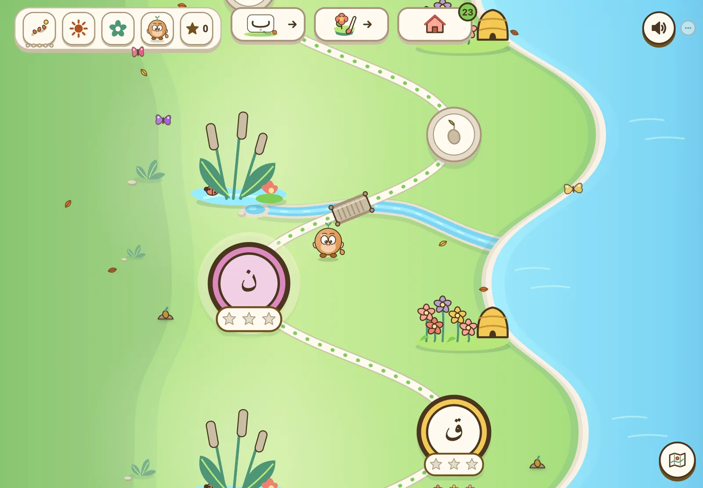
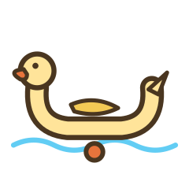
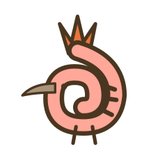
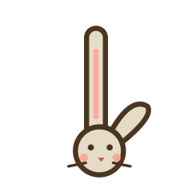
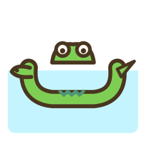
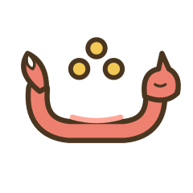
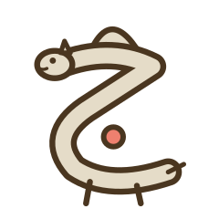
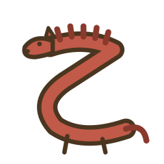
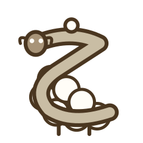
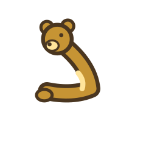
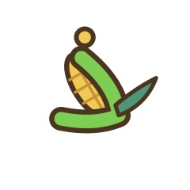
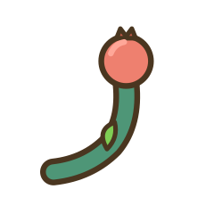
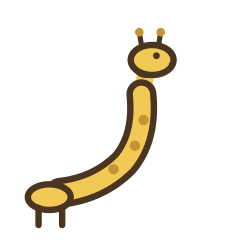
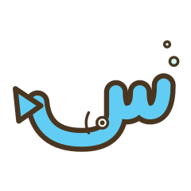
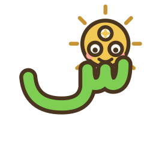
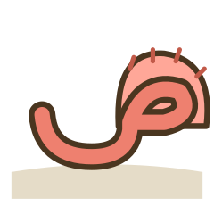
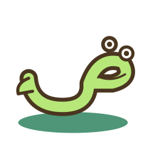
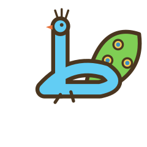
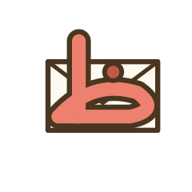
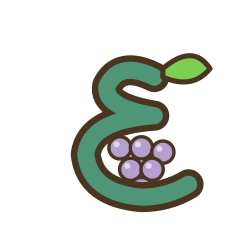
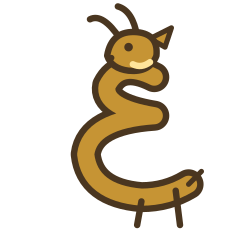
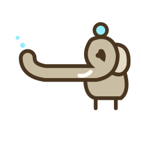
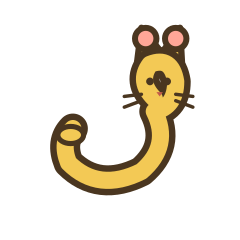
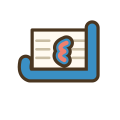
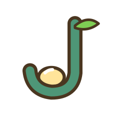
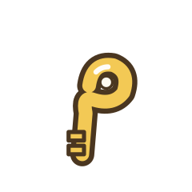
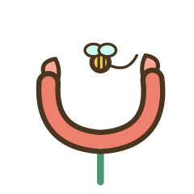
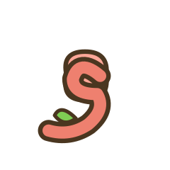
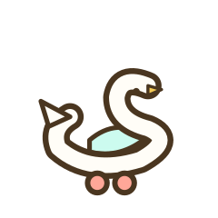
Letter Garden: where children make friends with the Arabic letters
Each of the 28 letters is a character whose shape is drawn into its picture: the Ba is a duck, the Noon a bee. Children meet them, trace them in sand, find them in picture books, and watch their garden grow as the letters settle in.
Ages 3–7Phone & tabletWorks offline
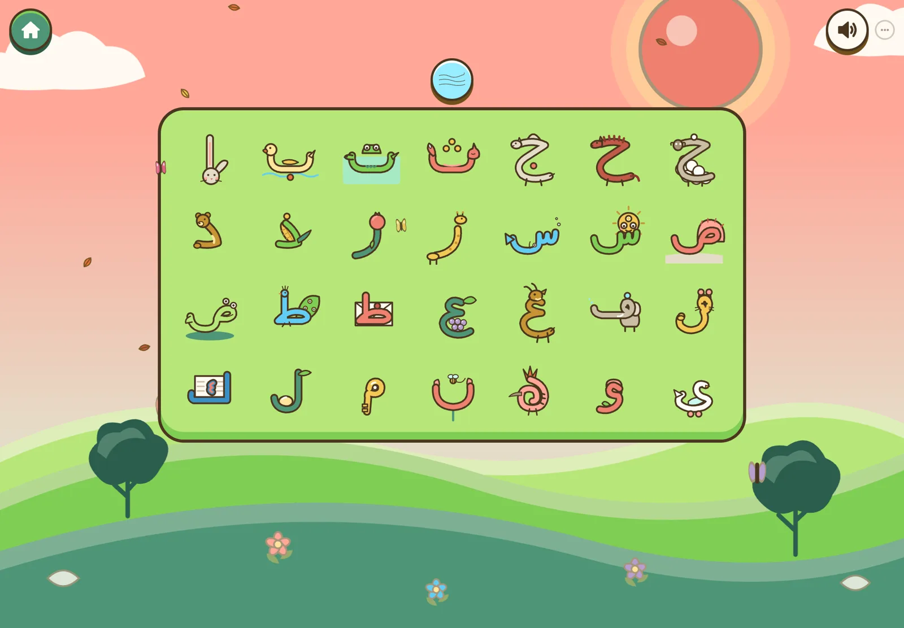
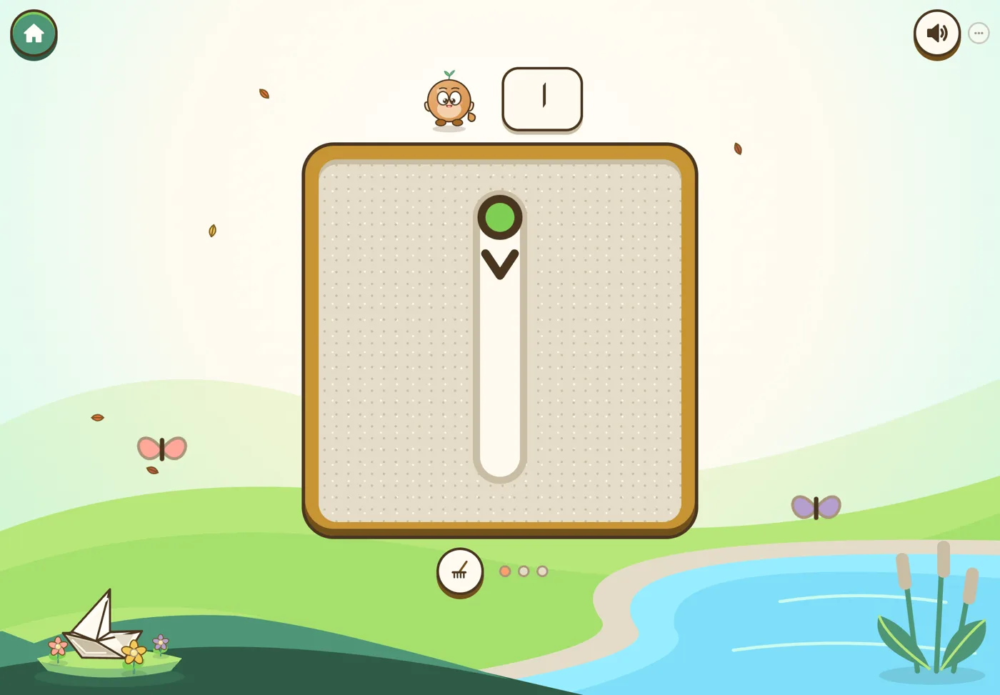
The Sand Table
Children write each letter with their finger, stroke by stroke. Guides fade as the hand learns the shape.
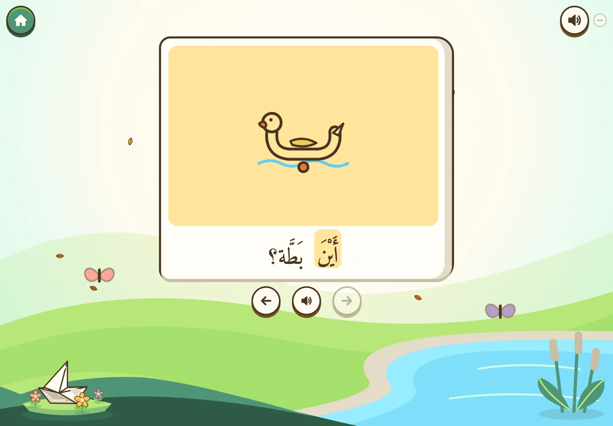
Living Books
Short picture books written only with letters the child already knows, read aloud with each word lighting up.
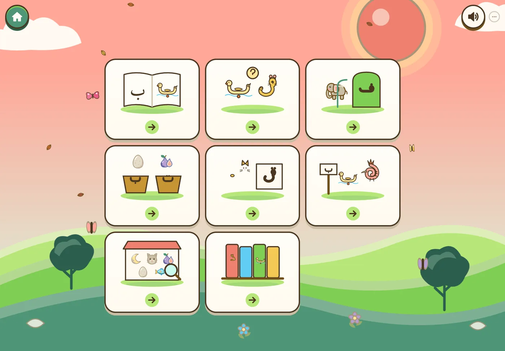
The Book Corner
Games borrowed from the best picture books: lift-the-flap, a busy market to search, a hoopoe's journey, sound sorting.
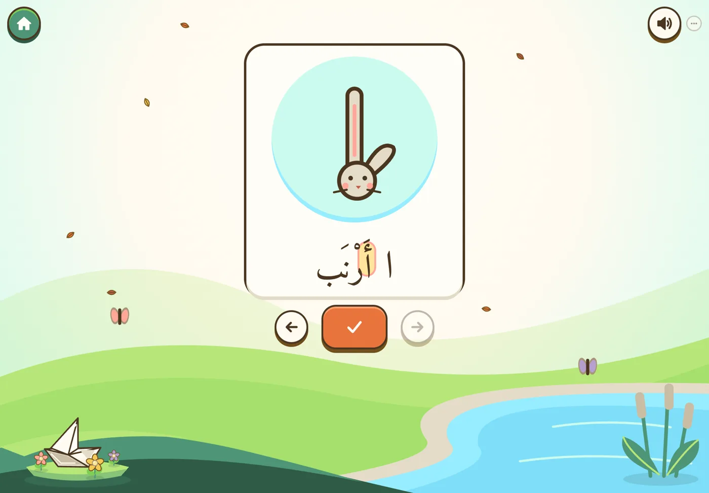
Letter, sound, picture
Every friend links a letter's name, its sound and a real Arabic word. A rabbit (أرنب) for Alif, a duck (بطة) for Ba.
Built the way young children actually learn
Letter Garden draws on well-established findings about how children learn to read, applied with care to Arabic script.
Pictures that hold the shape
When a letter is drawn into a familiar picture, children connect the shape to its sound faster than with plain flashcards.
Hands, eyes and ears
Tracing, hearing and finding a letter all build the same memory, so each letter is met through touch, sound and sight.
Reading real words early
Decodable books use only the letters a child has learned, so the first reading experience is success, not guessing.
Gentle, spaced review
A quiet model of each letter's strength brings shaky letters back at the right time. Nothing is ever "failed".
What we leave out
- No ads
- No failing
- No loot boxes
- No streak guilt
- No timers by default
- No background music loops
- No accounts for children
One lantern, from the first letter to the Qur'an
Letter Garden is the first step of a single learning path. The same gentle method carries a learner from recognising letters to reading and understanding Quranic Arabic.
Letter Garden
The 28 letters, their vowels and first words, through play, tracing and picture books.
Play free →Quranic Arabic
Learn the most frequent words of the Qur'an in their real verses, so that a few hundred words open up much of the text.
Reading companions
Calm, interactive companions for classic works of Islamic reflection, offered freely as part of our mission.
Timeless Seeds →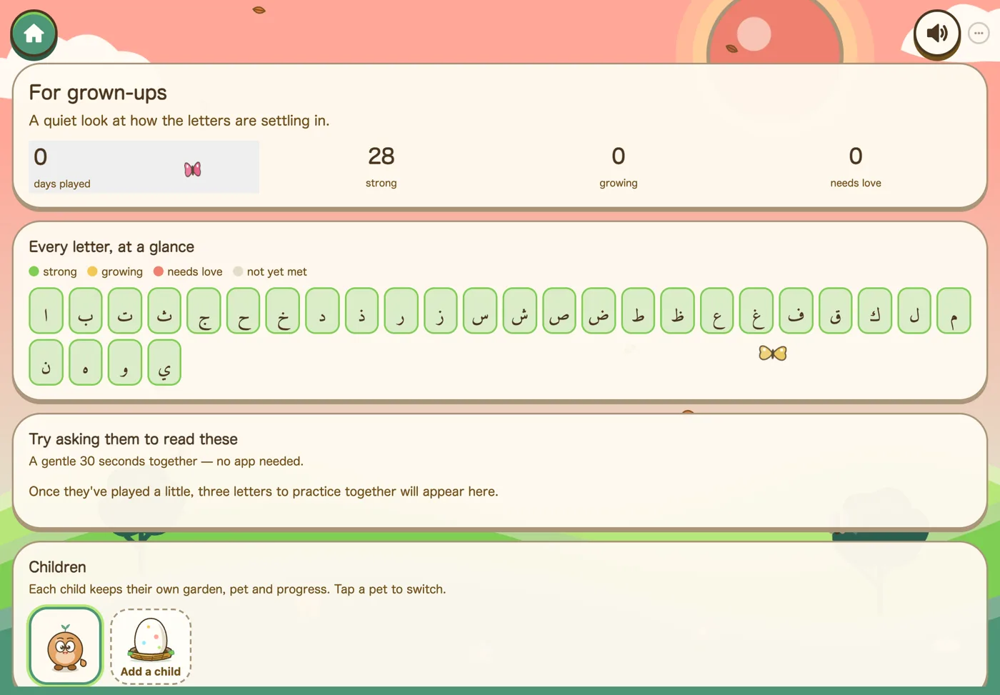
A quiet window for grown-ups
Behind a press-and-hold corner, parents see which letters are strong, which are still growing, and three to practise together, with no app needed.
- Progress stays on the device. No child accounts, names or photos.
- Siblings each keep their own garden on a shared device.
- Gentle mode and Little Sprout for the youngest and most sensitive learners.
قنديل · a lantern
Qandeel is the Arabic word for a hanging lantern, a cousin of the English word "candle". A lantern doesn't walk the path for you; it lets you see the next step.
Qandeel was started by a parent and software builder who wanted their own children to love the Arabic letters, and found that most apps were loud, ad-filled drills. We are building the opposite: calm, beautiful and careful with both children and the sacred text.
Schools, Quran centres, parents and partners: we'd love to hear from you.
For pilots, partnerships or feedback, write to